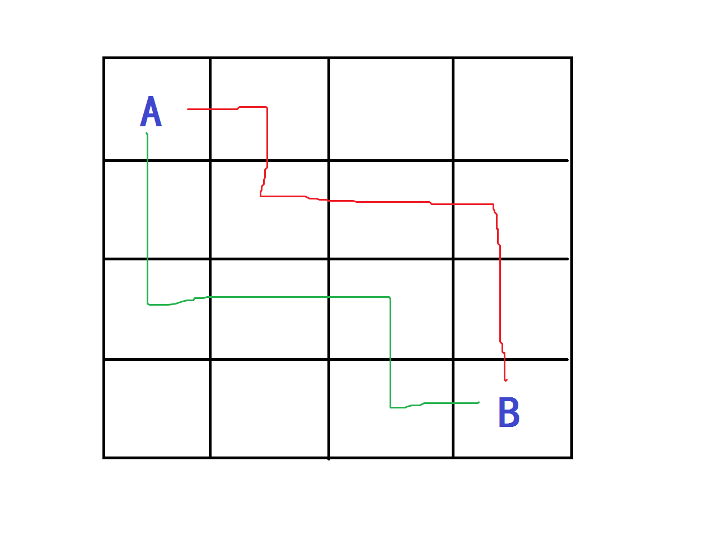

今天发现自己完全对这种dp没有思路……我果然太蒻了。/落泪.jpg
对于一个N*N的方格图中选择两条线路从左上角到右下角，其实只要用一个数组f[i][j][p][q]记录一个人走到(i,j)另一个人走到(p,q)的最优解就好啦。
由于行进的方向是固定的，即只可以向右或向下，所以只可能有四种情况：f[i-1][j][p-1][q],f[i-1][j][p][q-1],f[i][j-1][p-1][q],f[i][j-1][p][q-1]。
得到状态转移方程： f[i][j][p][q]=max(f[i-1][j][p-1][q],max(f[i-1][j][p][q-1],max(f[i][j-1][p-1][q],f[i][j-1][p][q-1])))+d[i][j]+d[p][q];
代入具体题目进行分析。
四维dp模板题
分析对于走过后数字变为0的情况，其实只要判断在两条路径重复时减去d[i][j]就好了。
代码：
#include<iostream> #include<cstdio> using namespace std; int n; int d[10][10],f[10][10][10][10]; int main() { scanf("%d",&n); while(1) { int x,y,v; scanf("%d%d%d",&x,&y,&v); if(x==y&&y==v&&v==0) break; d[x][y]=v; } for(int i=1;i<=n;++i) for(int j=1;j<=n;++j) for(int p=1;p<=n;++p) for(int q=1;q<=n;++q) { f[i][j][p][q]=max(f[i-1][j][p-1][q],max(f[i-1][j][p][q-1],max(f[i][j-1][p-1][q],f[i][j-1][p][q-1])))+d[i][j]+d[p][q]; if(i==p&&j==q) f[i][j][p][q]-=d[i][j];//去重 } printf("%d\n",f[n][n][n][n]); return 0; }
例题二 P1006 传纸条
与上一题不同，这一题的两条线路无法重叠。而这两条不重叠的线路：

一定是一条在上一条在下的！
所以p只要枚举i+1~m。
又因为p的限定，i是肯定无法枚举到m的，所以我们的答案只要等价的输出f[m-1][n][m][n-1]（实际上也是唯一解），因为(m-1,n)和(n,m-1)达到(m,n)都不用加上好心程度嘛。
代码：
#include<iostream> #include<cstdio> using namespace std; int m,n; int d[55][55],f[55][55][55][55]; int main() { scanf("%d%d",&m,&n); for(int i=1;i<=m;++i) for(int j=1;j<=n;++j) scanf("%d",&d[i][j]); for(int i=1;i<=m;++i) for(int j=1;j<=n;++j) for(int p=i+1;p<=m;++p) //避免两条线路重合 for(int q=1;q<n;++q) f[i][j][p][q]=max(f[i-1][j][p-1][q],max(f[i-1][j][p][q-1],max(f[i][j-1][p-1][q],f[i][j-1][p][q-1])))+d[i][j]+d[p][q]; printf("%d\n",f[m-1][n][m][n-1]); return 0; }